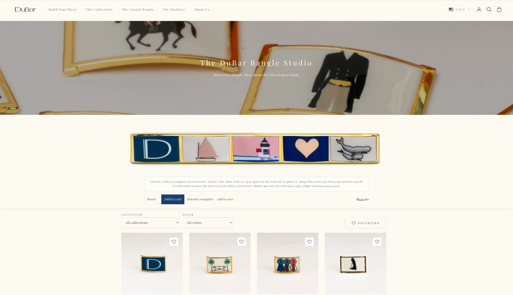
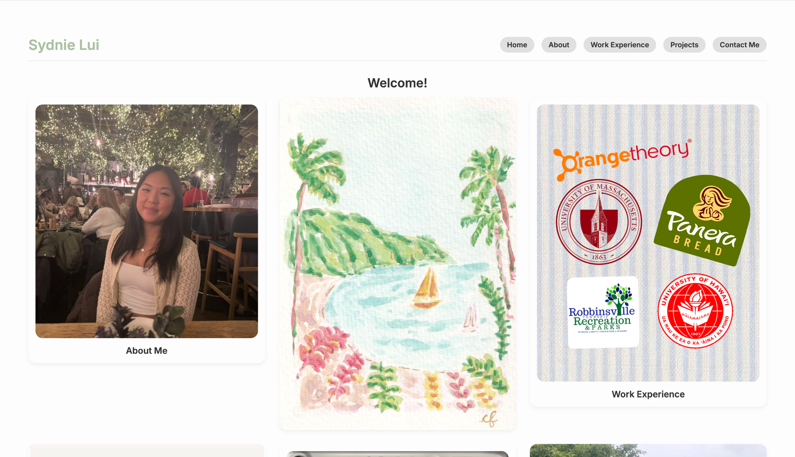

01
Portfolio + Personal Websites
Clean, responsive sites for creatives, students, small business owners, and professionals who want a polished online presence.
About
I am a recent Computer Science graduate from the University of Massachusetts Amherst with hands-on experience across web development, UI design, digital content, office systems, and team leadership.
I like interfaces that are functional, charming, and clear enough that people never have to wonder what to do next.
Services
Clean, responsive sites for creatives, students, small business owners, and professionals who want a polished online presence.
Focused pages for launches, services, events, or campaigns with clear calls to action and a visual style that feels memorable.
Frontend updates, responsive fixes, product-page polish, and custom interactive pieces that make shopping smoother.
Featured Work

Developed an interactive bracelet configurator with real-time customization and dynamic UI updates for a smoother shopping experience.
View project
Created a responsive, interactive portfolio with a Pinterest-inspired layout, intuitive navigation, hover states, and a mobile-first structure.
View projectCollaborated on a Quizlet-style app with card creation, editing, study flows, semantic HTML, CSS Grid/Flexbox, and keyboard-friendly UI.
View codeToolkit
Experience
Support patient intake, scheduling, clinical workflow, and social content for TikTok and Instagram.
Lead chapter strategy, coordinate with the national board, delegate to 15+ chair holders, and support 20+ annual events.
Supported 2,500+ residents while managing records, access cards, Salesforce updates, and service requests.
Supported 50+ students through accessible communication, organization, and inclusive Instagram content.
Education
B.S. in Computer Science
Fall 2022 - Fall 2025National Student Exchange
Spring 2025Contact
I would love to help make it feel clean, memorable, and easy to use.